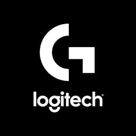

RAZER

Razer™（雷蛇）是全球領先的玩家生活潮流品牌。
三頭蛇商標在全球遊戲和電競社區中是最廣為人知的標誌之一。Razer的粉絲遍佈於各大洲。集團已成功設計及打造了全球最大規模、以玩家為主的硬件、軟件和服務生態系統。
屢獲殊榮的Razer硬件產品包括高性能個人電腦與遊戲主機的外置產品及Razer Blade靈刃系列遊戲筆記本電腦。
Razer的軟件平台擁有超過1.75億名用戶，其中包括物聯網平台Razer Synapse雷雲、RGB燈光技術系統Razer Chroma RGB以及遊戲優化及啟動程式Razer Cortex雷遊。
LOGITEC
羅技是一家專注於創新與品質的瑞士公司，其設計的產品和體驗在人們的日常生活中佔有一席之地。
40 多年來，我們在產品設計和全球研究的專業能力上，都已大步向前。我們的產品著重於客戶是如何與數位世界連接與互動。
在每個團隊和每個學科中，我們將設計視為我們所創造之一切的中心，打造出真正獨特和具有意義的體驗。
羅技的產品幾乎行銷世界上每個國家，其設計的產品協助企業蓬勃發展，並透過音樂、遊戲、直播、視訊和運算，將人們凝聚在一起。
羅技的品牌包括羅技、羅技 G 系列、ASTRO Gaming、Ultimate Ears、Jaybird、Blue Microphones 和 Streamlabs。